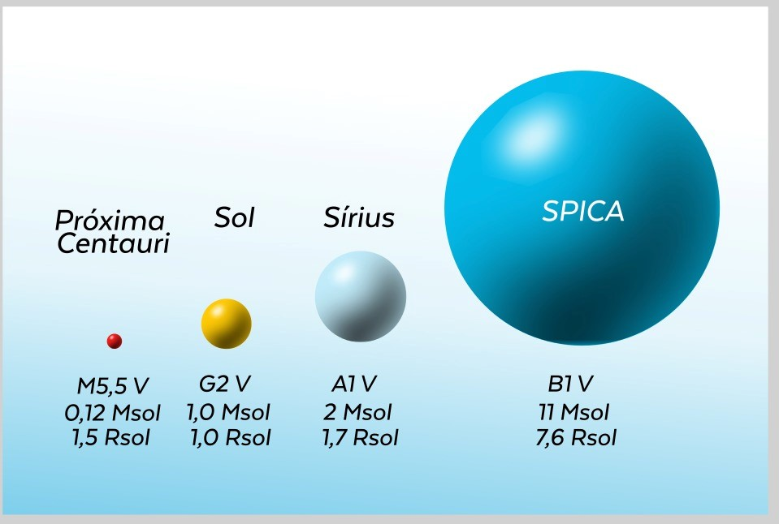

TEMPERATURA E CLASSIFICAÇÃO ESPECTRAL
O eixo horizontal do Diagrama HR corresponde à temperatura efetiva das estrelas, que é uma medida da temperatura da superfície da estrela. A escala de temperatura no diagrama é geralmente dada em Kelvin (K) e é invertida, com as temperaturas mais altas à esquerda e as mais baixas à direita. Essa inversão é feita para manter a correlação física entre a temperatura e a luminosidade das estrelas, pois estrelas mais quentes são geralmente mais luminosas. As estrelas azuis e brancas, que são mais quentes, aparecem à esquerda, enquanto as estrelas vermelhas, que são mais frias, aparecem à direita (Hertzsprung, 2020).
Além dos eixos principais de luminosidade e temperatura, o Diagrama HR também pode incluir outras escalas auxiliares, como o tipo espectral das estrelas e sua magnitude absoluta.

O tipo espectral, que é uma classificação das estrelas com base em suas linhas espectrais, está diretamente relacionado à temperatura e pode ser usado como uma escala adicional no eixo horizontal. As classes espectrais, que vão de O (as mais quentes) a M (as mais frias), ajudam a identificar as características químicas e físicas das estrelas, adicionando uma camada extra de informação ao diagrama (Russell, 2019).

Tamanhos relativos de quatro estrelas da sequencia principal. Quanto maior a massa da estrela, mais quente, maior e mais luminosa ela se torna. É devida `as diferenças de temperatura entre elas. O fator restante de 106 no intervalo de luminosidades deve-se as diferencas em raios estelares